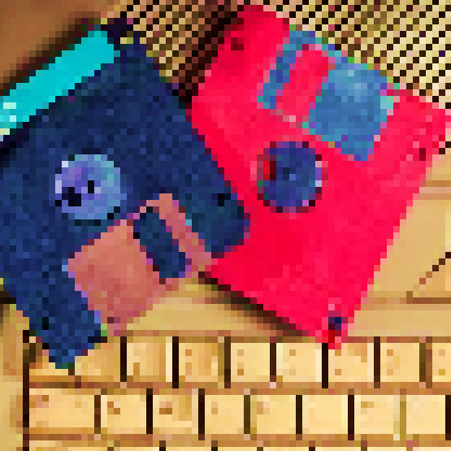
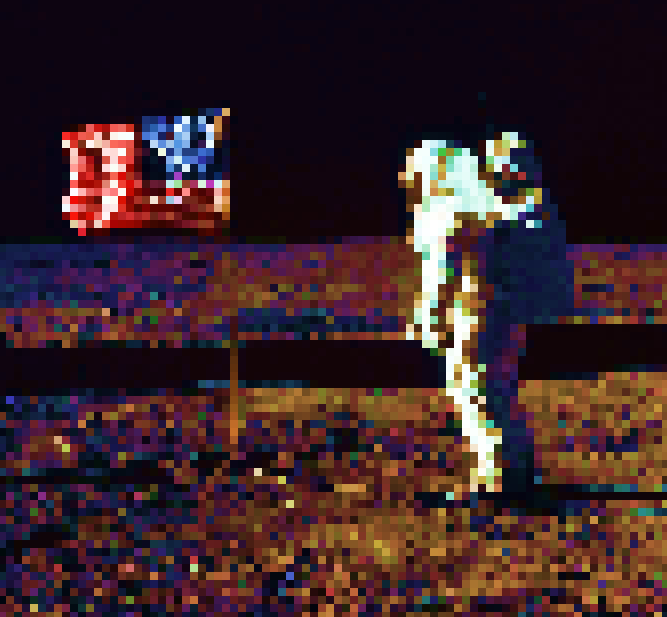

P
rofile
ctrl+p
S
earch
ctrl+s
S
t
ory
ctrl+t
≡
P
rofile
A
vatar
P
r
eferences
F3
►
M
ore
I
diom
B
locked Users
S
tories
F10
H
elp
InstaTui
The best old-school social network
(Try this in a mobile view)
(√ Mobile view)
John Due says:
The winxp bg is amazing!
Jane Due says:
 Bought my first 2 PC games!
Astronaut says:
 One small step for man one giant leap for mankind
Search
Profile
+